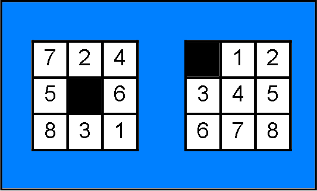
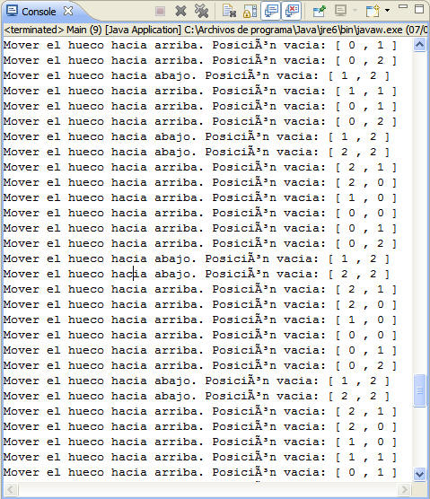
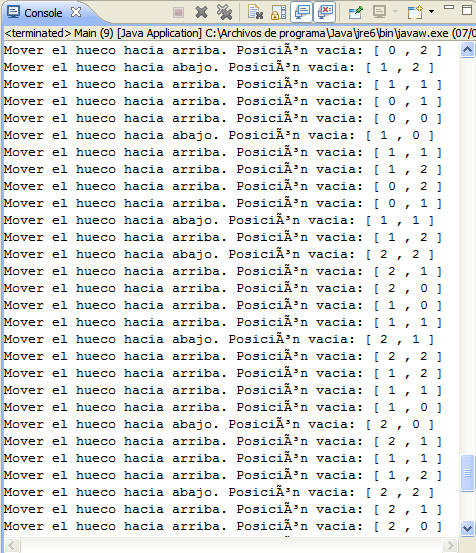
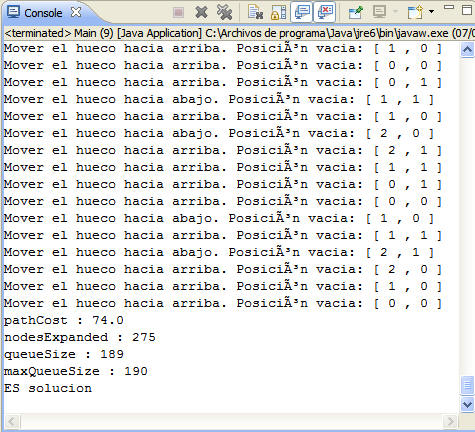

| N - Puzzle |
Disponemos de un tablero 3 x 3 que contiene 8 fichas y una casilla vacía. Las fichas pueden desplazarse horizontal o verticalmente a la posición adyacente siempre que esta casilla sea la vacía. El objetivo del puzzle es, dada una configuración inicial, llegar a través de una secuencia de movimientos válidos hasta la configuración dada. 
La medida heurística se obtiene en base al número de casillas diferentes al estado objetivo. h'(n) = Distancia Manhattan.
Algoritmo GreedyBestFirstSearch o Búsqueda voraz: Algoritmo que consiste en intentar situarse en cada paso lo más cerca posible del objetivo. Aplica la función: f'(n) = h'(n) = Representa el coste mínimo para ir desde el nodo n hasta un nodo objetivo. Debido al gran número de operaciones que deben realizarse para conseguir una solución y teniendo en cuenta que todas las operaciones suponen el mismo coste, ya que es el intercambio de contenido de dos casillas adyacentes, no resulta necesario incluir dicho coste en la función sucesora, lo que describe el algoritmo voraz.   
Estado : Tablero Representación intuitiva mediante la que se tiene pleno conocimiento del estado del juego, así como su proximidad a un estado objetivo evitando a su vez, sobrecargar el contenido que contiene el estado (únicamente los datos necesarios)
Estado inicial: Estado final: |